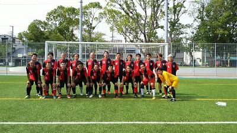

ててんてーんまりと試合前になぞのおばあちゃんが現れて（２回目？）ぶっちのボールを借りて、上にボール投げたり、メンバーに絡みまくってましたね。２０分くらい居たかなあ。
今日はいつもと開始、終了時間が違ったので昼寝も出来ず、めちゃあくびしながらカキコしちょります。今日は遅刻、早退で合計１６名の参加がありました。最終的には２０分６本あったから多くて助かりました。
今日は久々に対戦したYODRIDさんの主催で初対戦のエカリンさんとで巴戦をしました。お相手頂いてありがとうございました。
YODRIDさんは３０歳以上も結構居た感じですがエカリンさんはほぼ２０代ちゃうんってくらい若く見えましたし運動量が桁外れでした。まあ、それでもうちはうちのおじさんパワーで頑張ってくれていたと思います。
先週に比べると太陽が雲に隠れる時間帯も多く、風も結構あったので助かりましたね。
さて、正直あまり覚えていませんが１本ごとにいつものようにカキコします。補足あれば各自よろぴく。
１本目はYODRIDさん、結構攻められてましたがゆっきーがバックで奮闘してくれたり、まんちゃんのナイスセーブもあったりしましたね。
ただ攻撃は単調でした。特にメンバー構成が理由かはわかりませんが、サイドが全く居なかったのでどうしても縦にパスを出すしかなかった感じでしたね。もちろんその時によりますが、パス先としてサイドはあえて張った方がいいのかなって観ていて思いました。
うちのチームとして体力的に厳しいかもですが、いつもですがパスを待ってても声を出さない、待っているだけで貰いに来ない、自分でずれてパスコースを作らない、この３つが課題だなって思います。僕も出来てないからあまり言えないけどこれがちょっとでも出来ればもう少し繋がるサッカーが出来るのかなって思います。双方無得点でした。動画ありまーす。
２本目はエカリンさんとの１本目。トシキがパワーで負けたのかなって思ってたらクリアで蹴ったボールが相手にぶつかってそのままフリーでシュート決められちゃいました。最後の助っ人で相手吹っ飛ばしてたのでトシキには紅白戦でも近寄らんとこう（笑）
もう１点はサイドからのセンタリング？をオフサイドって思ってプレーが止まったところをやられましたね。主審の笛が鳴るまでは集中切らさないようにしましょうね。
でも攻めもなんどかいい感じがありましたね。サイドからタクちゃんとトシキのコンビ攻撃やなかやんからトシキへの縦パスがオフサイドになってしまったけど惜しかったりとかありましたね。
僕がコーナー蹴った時にリューゾーがフリーだったのでドンピシャであげたんだけどその前に居たタクちゃんが難しいトラップをしてゴールねらったのを試合後リューゾーが自分のボール来てたらやばかったと話してたわ（笑）
３本目はYODRIDさんと。３点取られたけどそのうち２本は防げましたね。キーパーが飛び出し過ぎてバックとの連携が合わなかったのとさっきと同じでオフサイドって思ってプレー止まって決まられました。
毎回言ってますがセンターバックかキーパーのどちらかの声かけは必要ですね、マークの確認時は特に。ただ、飛び出すタイミングや依頼はキーパーだけじゃわかりませんからバックが出て欲しい時は声かけをするようにしましょう。キーパーとバックが重なってそこで結局どっちもつかずで決まられていることも多いので。あと、キーパーに飛び出してもらった時にバックは可能なら相手の進路を防ぐようにしましょう。
うちも２点取りました。１点目はタクちゃんから縦パスをトシキが走りこんでくれて冷静にサイドネットへゴール、もう１本は最近、愛妻パワーで絶好調なオカちゃんが以前と同じく縦パスでの浮き球をそのままキーパーを超える感じでシュートを打って決まりました。オカちゃんの得意なプレーになってますね。
個人的にはトシキへの逆サイドへのパスと、最後の方でニアに走りこんで来たトシキへのパスくらいしか印象なかったかなあ。
４本目はエカリンさんです。ヤスさんがカットしてくれるけど裏とられたら諦め癖があるんでゆっきーが大変そうやった（笑）
この試合も２点取られました。１点目は風もあってキーパーのファンブル、もう１点も連係ミスでキーパーへのバックパスでファールになって間接でふわっとしたボールで決められちゃいました。
この試合もパスの出しどころがあまり無かったかなあ、動画あるんで観てちょ。
５本目はYODRIDさんと。むらっちのパスからタクちゃんがシュートを決めてくれました。バックは久々にヤスさんと僕とセンターバックしたけど声も出してサイドバックともお互いに相談しながら結構いい感じで出来ました。
開始早々ぶっちのバックパスが奪われてやばかったけどヤスさんがいい感じで防いでくれました。
最後はエカリンさんと。この試合も２点取られたなあ。１点目はヤスべえがポコッてやられた、２点目は何かで決められた（笑）
結果的にうちは１点も入れられなかったけど、いいチャンスが一度、ゆっきーがセンターバックでキープしてくれたので僕が左サイドを駆け上がったら絶妙なパスが出て、んで、ボールに追いついて中を観たらトシキが駆け上がってきてたのでほんと浮き球をそのまま左インサイドでふわっとクロス、奇跡的な感じでトシキのちょうど前らへんにボールがあってトシキもいい感じでトラップ、ゴール前でドフリーでキーパーと１対１、おっしゃーって思ったらまさかの爆裂ホームラン、僕と違うんだからさあ、僕のアシストを返してくれー（涙）
まあ、そんな感じでした。シュトとか足を痛めたりしてたのは大丈夫かな？わだっちがアイシングしてたのはびっくり、めちゃ走ってたもんね。
本日、参加された皆さん、お疲れちゃん。
暑かったねー、ほんとテントとターフ持ってきて良かったわ。でもやっぱり僕だけ用意するのも大変だから誰かも頼むよ～。
今日は特にしんどくなかったわ、足の爪を痛めて途中で離脱したから。頑張ってたメンバーに負担かけて申し訳ないっす。
さて、今日は遅刻、早退のメンバーも含めて２３名の参加がありました。大人数で助かったなあって思います。
当初は２１名で１５分くらい紅白戦をしました。その結果を踏まえてその後の試合時間とかを考えようと思ってたけど１５分でやばかったから、結局その後は２０分ハーフ、途中で給水タイムで合計５本をしました。
巴戦予定だったのが急遽さしになっても嫌な顔せず、むしろいっぱいしようって言ってくれたレオンFCさん、ありがとうございました。サイドからの攻撃とか近距離でのパス回しとか試合慣れしているなって感じました。また今後ともよろしくお願い致します。
さて、覚えている範囲で１本ごとのハイライトとかをいつも通りにカキコしていきます。
１本目、開始早々、２列目に居たタクちゃんから前に同じ場所らへんに居たオカちゃんとテラさんへパス、相手チームさんはオフサイドって思ってプレー止めちゃったのもあってラッキーでしたが、パスをオカちゃんが受けて浮き球のままお得意になってきた感じのループシュートが決まりました。
反対に酒ばっか飲んでて寝不足のヤスべえが凡ミスで相手にボール取られて、そのまま相手がシュートかパスかどちらかで前にボールを出したのをフォローに来ていたわだっちの手に当たってPK献上、相手チームさんが外してくれたのでことなきを得ましたね。
後はトシキとタクちゃんのコンビネーションがおしかったりかねやんが頑張っていたと思います。
２本目、なかやん劇場だった気が、一応動画取ったけどまだ観ていないから映っているかわからんけど、珍しくワントップしていたなかやんがボールキープしてキーパーと１対１になったのかな？んでキーパーが足もつれてこけた感じになってゴールはガラガラ、ラッキーと思ってシュートしたら倒れているキーパー直撃、再度ボールが戻ってきたので今度は少し横にかわしてシュート・・枠の外なんでやねん（笑）
後はロングボールトラップハンドもあったなあ。
でも既に反省文を書いているリューゾーもポコッたなあ、なかやんと同じ感じでキーパーと１対１交わして冷静にシュート左側にそれる、ほっかむりして戻ってたなあ。給水タイムの時に２人には水飲むなってヤジが飛んでた（笑）
後はまっとんがジャンプトラップハンドみたいなことしたり、最後の方に左サイドからよっしゃんが上がってきてミドルを打とうとしたシーンとかありましたね。
反対にバックラインとボランチの位置のずれとかで相手チームに右からクロス上がられて、左からドフリーで上がってきた相手チームさんに叩きつけるような見事なヘディングを決められちゃいました。
３本目、開始早々、オカちゃんから右サイドハーフのゆっきーにえぐいパスがあって、ゆっきーが必死に追いかけたプレーがありましたね。
タクちゃんがめちゃ仕掛けてました、特に後のゲームでもだけど相手の１０番とのやり合いは凄かったですね。僕がおとりになったおかげ？２回切り返して完全にフリーになって打ったシュートも枠を捉えられず。
何度かあって僕も上がって行ったけどタクちゃんが抜くだろうと思ってたのもあったけど、横にパスが来てそのまま打とうかなって思ったけど、ボールに回転が掛かっていたのと相手バックが飛び込んできたので右に一度交わしてシュート打ったら、さらにそのバックが足を出してきてブロックされちゃいました。なんとかこぼれ球をキープして中央から走りこんできたオカちゃんへバックパス、スピードに乗った強烈なシュートがはるか上に飛んで行った（笑）
後はまえちゃんがループで相手を交わしてキーパーと１対１になって、さらにループで打ったらゴールまでの距離が近すぎたのもあってバーの上を超えた惜しいプレーがありました。
わだっちがいい感じで飛び出してたけどオフサイドってめちゃわかるところでパスを受けてシュートしてゴールにはなったんだけど、審判も線審も何も言わなかったけど、良心の呵責でオフサイド扱いに（笑）
後はいつもはトップ下でプレーするむらっちのボランチがいい感じでした。
４本目。２本目もだけどリューゾーが前線で孤軍奮闘してたね。メンバー構成もあるけどやっぱり誰かのフォローは必要かなって思います。
バックも含めてもりちゃんがめちゃ動いてましたね。もりちゃんのパスカットからおみちゃんに渡って右サイドを駆け上がって中央に居たシュトにグランダーパス、それをシュトがいい感じでトラップしてモーションの早い感じでシュートが決まりました。シュトがシュート、カキコしてて間違えそう（笑）でもシュトはその前に右サイドの角度の無いところでボール持ってキーパーが前に出ていたのでそのままシュートしたら引っかかりすぎてボールはゴール手前で外に出て行ってたなあ（笑）
なかやんが左サイドをドリブルで上がってきて、中央には味方が３名くらい並行して上がってきたんを見て、左足でクロス、相手キーパーへのゆるーいシュートになったけど効き足の兼ね合いもあるからまあしゃーないですな。
僕は開始５分で爪痛めて・・・はあ、何やってんだろ（涙）
ラスト５本目。まっとんが中央少し右側らへんをドリブルで上がってきて、さらにサイドに居たタカさんへナイスパス。タカさんがサイドからクロスを上げる前にまっとんもゴール前にいい感じ、タカさんのライナー性の強烈なクロスがマットンを直撃（笑）、ほんとぶつかった感じでボールはゴールラインを超えて行った。
後はタクちゃんがドリして中央に居たわだっちへパス、わだっちがローリングトラップでデフェンスを交わしたけどボールが少し離れてキーパーに抑えられちゃいました。
タカさんがお得意のコート中央で右サイドくらいからの正確無比なふわっとしたクロスにむらっちが走りこんでジャンプトラップして、そのままシュート、お見事なゴールでした。
この試合だったかな？タクちゃんが胸トラップでボール受けてそのまま体を横向きにしてボレー打とうとしたのは。
まっとんがいい感じでデフェンスを頑張ってましたね。
わだっちが相変わらずの運動量で活躍してました。タカさんがむらっちへの同じようなボールをわだっちが走りこんでジャンプして足で合わせようとしてゴール横に逸れて、その後今度はタクちゃんから左サイドからの斜めのクロスにはヘディングで合わせたけどバックステップ気味でちょっと難しい感じで惜しくも外れました。
まあ、そんな感じの１日でした。参加された皆さん、お疲れ様でした。
最後に注意です。事前に時間厳守でと言いましたし、いつもより３０分遅くしたのにも関わらず時間内には半数くらいしか居ませんでした、また数名でグランド準備をしていたのにずっと喋ったりして用意もゆっくりで僕から声かけをしないと動かない状況でした。またライマンはともかく未経験でも主審も率先してしようという気持ちが欲しかったです。
全員ではありませんが、そういったメンバーが増えてくるとチーム状態が悪くなってくるのを過去に経験しています。誰かがやってくれるだろうではなくて、自分から進んでしようっていうメンバー全員になるようにご協力お願いします。
毎回誰がして、トータルでしている人、していない人を数えたりするようなことはしたくないです。楽しむのも平等、しんどいことも平等でお願いします。
体験参加から正式入部を振り返ると、みなさんには右も左もわからない僕に対して優しく接して頂いて感謝しています。
今日の試合は、ゴールと言う形でやっとチームに恩返しと貢献が出来たと思いました。
これからも微力ながらチームに貢献していきたいと思っていますのでどうぞ宜しくお願い致します！
今日も暑い中みなさんおつかれさまでした。
かなりの日差しでなかなかハードでしたが、
今日も皆さんとボールを蹴れて本当に楽しかったです。
ありがとうございます。
今日は初戦の決定的なチャンスを外すところから始まり、
その後もミスの連発が続き、
最後の試合に出してもらったにも関わらず
足が止まってプレーにほとんど絡めないという散々のプレーでした。
すみません…。
これからは
ドリブル、パスなど場面場面でのミスを減らす。
1試合走れる体力づくり
を意識して皆さんの戦力になれるように練習に励みます…。
今日も暑い中サッカーバカが１８名集まりましたね。ほんと練習でも２０名近くっていつもありがたく思ってます。古参メンバーもフレッシュなメンバーも平等に今日も楽しくボールが蹴れました。
いつも通り鳥かごでアップしてからミニゲしました。
個人的にはサイドでボールを持っている時に味方でぶっちが居てくれると裏に走ってくれるのでクロスのあげがいがありました。１本目にぶっちが走りこんでダイレクトでゴール決めてくれたのは助かりました。
後はデークテラーが思いっきり後から僕の足を蹴ってきたのに嘘で倒れてファールとか言ってたなあ、その天罰じゃないけど最後足をひねったのはちょっと心配、きちんとアイシングとかしてくださいね。
テラさんともりちゃんのやり合いが今日は観てて楽しかった、もりちゃんがことごとく止めてた感じでテラさんがうなだれてた（笑）
後はトクタンクの突破力には脱帽したわ（笑）、何人かふっとばされそうになったなあ。ゆっきーは流石に負けてなかったけど。
まあ、今日は伝説のゴールが生まれました。サイドからのクロスを走りこんで来たなかやんがドンピシャでヘディング、強烈なボールが味方のゴールへ突き刺さりました（笑）、決めたポーズの後は土下座、同じチームだったまえちゃんも笑うしかなかった。タカさんが「一気にやる気なくなったわー」って毒はいてた（笑）
シュト、だっちゃん、おみちゃんのフレッシュコンビも久々参加のごろさも、バスで来たらしいカズもみんな楽しくしてましたが、最後は暑さもあるので１１：３０頃に早めに終わりました。
来週はお盆休みで今のところ人数が少ないです、人数によっては中止にするかもしれないので早めに出欠登録確定をお願いします。
本日参加された皆さんお疲れ様でした。
今日は非常に暑かったですが、Jグリーン堺並みの素晴らしいグラウンドで、たくさんの人数が集まり
2時間大好きなサッカーをさせていただき、ありがとうございました。
毎週日曜日にできる限り参加して、サッカーを楽しみながら体力もつけようと頑張っているつもりですが、
やはり体力の衰えは隠しきれません。
今日は自分のサイドはそれほど相手の攻め手が多いわけではなかったので、DFよりもハーフに近い動きを
させていただきました。暑いこともあって、走るボールよりも足元へのパスをみんな意識して
繋いでくれたので非常にやりやすかったですが、反面、ポジション的にはやらなければいけない
ディフェンスの仕事ををサボってしまったので、やはりサボらせないぐらいの体力が必要だと痛感しました。
まっさんが書いていただいている試合中の掛け声に関しては、自分が大いに当てはまるので、
今後チーム全体のことを考え、みんながやる気の出るようなコーチングをするよう心がけます。
ちなみに年に1回あるかないかの貴重な得点シーンは長男も次男も全く見ていなかったようです（苦笑）
梅雨も明けて、これからますます暑さが厳しくなりますが、みなさんと楽しみながら怪我なくボールを
蹴ることができればと思います。引き続き、よろしくお願いいたします！
今日は暑い中お疲れさまでした。
そして前日の親睦会はすみませんでした。ユッキーに喝を入れられました…まっさんからメールが来るちょっと前に僕に用事が入ってしまって「これはちょっと親睦会に行けない状況やな…」ってなったのでトシキに「ごめん。もしかしたら親睦会行けへんかも…」って連絡したら「実はオレも行けへんくなってん。」ということになり同じタイミングで欠席にさせてもらったという経緯があります。言い訳ですが…すみませんでした。次こそは参加します！ユッキーごめんなさい。
今日は約2ヶ月振りのエガリテで体はだるん②でした。走れへんボランチは無意味でした…8月も1回しか参加できませんがよろしくお願いします！
今日のトシキはたくさんシュートを外してましたね…みんなトシキに辛口なのは期待の裏返しだと思いますが、帰りの車で二人反省会をしていました。トシキはたくさんのゴールチャンスを外していましたが、「たくさんのチャンスを作っているからこそ外す機会が多いんやから凄い活躍なんやで」という僕の意見にトシキはにんまり笑顔で喜んでいました（笑）でもそうだと僕は思っています。中野さんもトシキもあれだけゴールチャンスを作れることは凄いことだと思います。確実にエガリテの武器ですよね。しかし、その中でもテラさんはちゃっかりゴールを決める…さすがエガリテのストライカーだな～と改めて思わされました。
ホントにエガリテのサッカーは楽しいですね。もっと参加したいんですが仕事もありますので出来るだけ参加できるときは参加させて頂きます。
ホントに今日は暑い中お疲れ様でした。
初参加のおおみです。マッサンからご指名頂いたので、コメントあげます。
やっぱ芝のグラウンドはテンション上がりますね！最高の一日になりました。簡単ながら感想アップします。
1試合目
印象的なオフサイド3発で雰囲気悪くなるかと思ったら、技ありの得点で一気に雰囲気好転。相手もかなりマークするようになり、ボール全く関係ないところで相手が焦ってテラさんにマークへダッシュ。テラさんはボールがあまりにも関係ないところやし、遠くのボールを見ていたら、敵が全速力でテラさんに衝突。
テラさんうずくまってました。そりゃ～痛いわ。
記憶に残る珍プレイでした。
試合は中盤でボールを取りかえす場面も多かったし、バックも安定してました。
2試合目
私の初試合です。右サイドバックで出ましたが、初めのタッチはダイレクトで返そうとしてミスキックで超焦りました。大丈夫だよ、って声かけてくれて落ち着き取り戻せました。暖かいチームやと、ほんまに思いました。ありがとうございました。相手チームのサイドハーフがあまり外からくる事もなく、かなりの時間高い位置でプレーできました。ただ、相手のDFがでかいしうまいしで、チャンス作れず、ほとんど中央の選手の方々で攻めてもらう形になりました。ありがとうございました。
一回だけ守備陣抜かれましたが、人数揃ってたなかで力技で狭いところを突っ込んでこられたので、逆に抜かれてしまったイメージです。私は戻りきれていなかったので悔いが残る形になりました。その後はバッチリ守備できてたし、すごかったです。
3試合目
私はラインズマンやってましたが、皆さんの攻撃の意識の高さ半端無かったです。大体2人は敵のDFラインにいて裏狙ってるし、サイドからも上がってくるしで本当に驚きました。ブッチさんのサイド突破からドリブルで持ち込んで角度のないファー側にドリブルしながらアウト回転かけて打ち込んだのは感動ものでした。点を取りに行く気持ちって大事ですね。再認識です。
4試合目
チーム内のポジション変えて私はセンターバックにチェンジ。久しぶりのCBでしたが、ボランチの前ちゃんがほぼボールを取ってくれたので、安心でした。攻撃陣もサイドからのセンターリングなども多数あったし、魅せるボレーもありのドラマチックな展開。中央でボールをキープしてくれていたのでほとんど攻撃の時間で本当に楽しかったです。
最後に、どちらのチームも楽しくプレーしてましたし、暴言もなく大人なチームだと思いました。
これからも練習、試合参加しますので、宜しくお願い致します。

今日は暑かったけど、ほんといいグランドだから？総勢２１名の参加がありました。
初めての大枝公園人工芝グランド綺麗でしたね。うちのチームに第一にお声かけて頂いたファントリックさんお招き頂いてありがとうございました。
せっかくの人数で綺麗なグランドでしたので久々に集合写真を撮りました。
人数的に２１名なのでまんちゃんにキーパー全部行ってもらったら後は２チームわけれるわって思って普段のプレースタイルとかポジションとか考えながら僕の独断で２人ペアになってもらってグッパーをしてもらって２チームに分けました。各チームのメンバーや誰とグッパーしたかとかは試合結果を参照してください。
さていつも通り試合ごとのハイライトとかをカキコしていきたいと思います。
１本目はAチームでした。２０分。
昨日の親睦会でテラさんがオフサイドはライマンのせいや的なことを豪語していましたが、いきなり３連発明らかなオフサイド、ライマンしてたまえちゃんも笑ってたわ（笑）。
それにビビッてか普段なら絶対に走りこむ場所に僕がクロス入れても一旦後ろに下がりすぎてたわ（笑）
でもそれでも早退の時は特に結果を出すテラさん、サイドバックのぶっちからテラさんへループパス、テラさんのかなり前にボールがあったけど追いついて、デフェンスを華麗なボールタッチで浮き球のまま交わして、あまり角度の無い所からミドルボレーがゴールネットに突き刺さりました。
あとは、テラさんから折り返しのボールをオーバーラップしてたカズがシュートしたり、コーナーのこぼれ球をわだっちがランニングボレーとかいいプレーがありました。
バックもゆっきーを中心にもりちゃんも奮闘してくれてました。
僕は攻めでは右サイドから反対のおかちゃんにクロス何回かいれたくらいで、後は大したことなかったなあ。でも昨日の親睦会で守りがとか言われたから今日は結構戻ったつもりだったけど画像見たらそうでもないかなあ（涙）
ていうかマークの９９番、高校生で後の試合でタクちゃんとやり合ってたくらいで僕が抜けるわけないわ。
もりちゃんビデオがありますよ（撮影者はまとぞう）
２本目はBチーム出陣。
僕がトイレに行った時にタクちゃんの惜しいシュートが序盤あったらしい。
その後に真正面でドフリーでシュートがへんな回転掛かって右側にそれていったのは珍しかったすね。
リューゾーとのワンツーとかで珍しくヤスさんがセンターラインくらいまで上がって来てたなあ。
相手に攻められている時にバックとかが全員浮き球をじっと見てて相手がフリーでシュートをうってきそうな場面がありましたね、最後はまえちゃんが体を張ってブロックしてくれましたが、あいういう時は誰かが声出すか近い人が詰めましょう。
１点取られちゃいましたね。相手のスルーパスに対してバックが裏を取られて、まんちゃんが前に出て防ごうとしたけどわずかに相手の足先がボールに当たってそのままころころとゴールへ、まんちゃんが必死に追いかけるも間に合わず。まあ、バックが裏を取られた場合はまずはバックが追いかけるか、バックの判断でキーパーに出てとか言ってあげれたらいい時もあると思います。それよりまんちゃんが必死に追いかけている時に足が絡まってこけそうになっていたので怪我とか無かったらいいんだけど。
後はトシキはつえーなあ、相手のがたいのいいのにも負けないし、小柄な相手は相手すらなってなかったもんなあ。ちなみにその相手のがたいのいい人にまっとんが果敢にプレッシャー掛けに行ったら思いっきり吹っ飛んでた。まっとん、ナイスガッツ。
この試合ももりちゃんビデオあります。
３本目は再度Aチーム。
個人的なことになるけど、右サイドでドリブルして相手に思いっきり足蹴られたけどレガースで何とか大丈夫でそのまま抜いた感じでキーパーと１対１でどうしようか考えていたら、ちょっと時間経って笛なってファール貰った。嬉しくねー、でも審判は神さまだから仕方ないか（笑）、んでペナエリアのちょっと外からフリーキックで直接狙ったんだけど、一応ね抑えるつもりで蹴ったんよ、人工芝が引っかかって蹴る場所がずれてぱぴゅーん、でもいつも通りやんて言われるだけだし（涙）
後はシュートは外すわで散々だったけど、むらっちへのクロスは自分では良かったかな。それに得点に絡めたし、ぶっちからだったかな？ちょっと僕が戻ってきてボールを貰ってそのままぶっちが右サイドを駆け上がって行くのを待って、相手の上を通してぶっちの前に落ちるようなボールが奇跡的に蹴れて、それをぶっちが拾ってそのまま少しドリして角度の無いところからシュート、お見事に決まりました。子どもの前でお父さん活躍でしたね。ぶっちとカズとの連携が凄くやりやすかったなあ。ぶっちもよければコメントお待ちしています。ちなみにタクちゃんによれば僕のアシストになるとの判断でした、やったぜ。
でもそのぶっちのいいパスを手前の白線をゴールラインと勘違いして遠回りでボールに追いつこうとしたら相手に取られた、ぶっちごめんよ。
４本目はBチームでした。初試合参加のおみちゃんがバックで奮闘してましたね。初試合の感想のカキコをお待ちしています。
この試合はクロス職員タカさんの華麗なクロスが目立ちましたね。
たくちゃん、トシキラインで果敢に攻めるもあと１歩が出無かったなあ。タクちゃん完全復活延期？ご感想待ってるわ。
タクちゃんよりもトシキがクールポコってたなあ。ベンチで見てたカズが「お前ええかげんにせえよ」って言ってたわ（笑）、トシキは反省文５万文字ね。
まあ、そんな感じでトータルでは久々にファントリックさんに勝利出来ましたね。僕がカキコお願いした以外の参加されたメンバーも遠慮なくカキコしてくださいね。
本日、参加された皆さんお疲れさまでした。
あと、最後に真面目な話を。試合中の声掛けですが、試合で熱くなるのもわかりますし、チームのことを思ってともわかりますが、やっぱり言われたほうが怒鳴られているように聞こえる声かけはやめましょう。きちんと戦術があるわけじゃないし、上下関係もありません。言われたらじゃあ、お前はどうやねん的なギスギスするような気持ちになりかねません。うちのチームのコンセプトを再度確認し、言い方もだけど失敗しても失敗する前のプレーを褒めようの精神でお願い致します。
二本目は画像が悪く、三分割になってしまいました。見ずらくなってしまい、ゴメンです。
一本目はまっとんに撮ってもらいました。キレイに撮れてます。